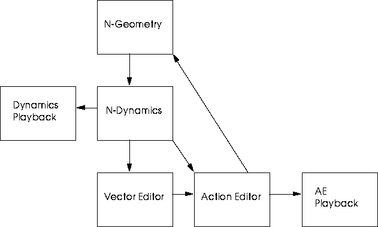

[N-World Contents] [Book Contents] [Prev] [Next] [Index]
Using PlayStation Express
Nichimen's PlayStation Express is designed to allow you to quickly and easily create 3D object and animation data, and port that data to the Sony PlayStation. You can preview attributed objects without animation, export TOD animations, or use the Action Editor and the Vector Editor to create MIME (multi-interpolation method) animations on the PlayStation.
Overview
PlayStation Express is designed to allow you, the artist, to see how your work will look on your target platform, the Sony PlayStation. It's designed to allow you to do your work in the context of that target system, so that any necessary optimization or adjustments can be made during the development process by you, the artist, rather than later by a programmer. The result is no surprises when it's time to actually build a game out of your work.
The PlayStation's MIME (Multi Interpolation MEthod) feature lets users develop a new type of game, capable of interactively displaying 3D character action in real time. This real time animation supports render attributes and deformations, a feature unprecedented in the gaming industry.
Computer graphics software (and character animation based on skin deformation in particular), typically uses sophisticated hierarchical data structures. In the past, game systems have typically been incapable or inefficient at handling such hierarchical structures. The relatively simple data structure developed for use in the PlayStation can represent both 3D objects and their associated animation data.
N-Geometry uses the concept of displacements to describe animation with skin deformation; displacements calculate the difference in position of vertices using vectors. Sony's MIME concept is based on a very similar idea, which make N-Geometry an ideal fit for development of 3D game models.
In addition to MIME animations, the PlayStation supports TOD animations. TOD animations support multiple objects and texture maps, but no displacements. They are ideal for generating game environments and animations for objects with "fixed" shapes.
Using the PC
The PlayStation interfaces with a PC, which in turn interfaces with the SGI. Data are transferred between the PC and the SGI via FTP. At various times, you'll need to launch the Sony software on the PC and execute several commands to prepare the software to receive objects and animations.
Keyframe vs. Vector animation
Before using PSX Express, it is important to understand the difference between the traditional keyframing approach to computer animation and the use of MIME vectors.
Keyframes, while powerful and useful for generating computer animation, are intended to produce a fixed sequence animation; that is, the script is defined, and each time the script is executed, the same animation is produced. The intent of vector-based animation is to generate interactive 3D action, which requires a new way of thinking about what makes an "action."
In MIME, an action is represented by a combination of a base vector (similar to a base displacement) and one or more additional vectors (similar to relative displacements). For each vector, a wave is created, which controls interpolation between vectors. With this approach, poses can be separated from time.
In vector based animation, you have a base shape for the model and a target shape for the model; the curve data determines the transition between the two shapes. By changing the shape of the wave file, you can completely control the transition between the two states.
Creating Data for the PlayStation
Users generate and edit data using N-Geometry and N-Dynamics, then use the Vector Editor and Action Editor to convert and export that data so it can be utilized by MIME on the development kit for the PlayStation. This process is iterative; you may go back and forth between N-Geometry, N-Dynamics, the Vector Editor and PSX Express several times as you tweak your animation:

Figure 1.1 N-Dynamics, N-Geometry, the Vector Editor, and PSX Express
Action is previewed in both the Dynamics playback window and PSX Express playback window, depending on the source of the recording.
MIME Objects
Data Export
PSX Express exports MIME animation data to an RSD file set containing:
This data is written to the local hard drive or to a shared disk via NFS, then sent to the PSX development system via FTP.
Vector
In describing MIME animation using skin deformations, a key shape is referred to as a vector. While the term vector normally refers to a difference in position (as with a displacement in N-Geometry), in the context of MIME it refers to an object displaced to a certain state; if you are familiar with N-Geometry, a vector is essentially the same as a relative displacement (or gesture, if you use multiple displacements). Displacements are described in detail in the N-Geometry Reference Guide.
Wave
The wave created for each subaction controls the interpolation between the base vector and any "relative" vector.
Data Structure
An understanding of the MIME object's data structure may help you use PSX Express more effectively:
Figure 1.2 Data structure of a MIME object
Each of these elements is described in the paragraphs below:
MIME Object
The MIME object contains all the data about the object except for its wave information. The vector information is saved to file as a MIME object.
Geometry Object
The geometry object is the model or "skin" being animated. N-Geometry supplies geometrical data, base and relative displacements, plus any render attributes.
- Note. Currently, the PlayStation does not support objects with hierarchical data structures; objects to be animated as MIME objects must be terminal objects consisting of a single skin.
Vectors
The vector list contains a list of vectors for the MIME object. Each MIME vector contains:
Action List
The motion of an object is referred to as an action. The MIME object can store multiple actions, which consist of a combination of multiple subactions.
Each action consists of a base vector and zero or more optional subactions. An action requires both length (seconds) and rate (frames/sec) parameters, which can be changed at any time.
Waves
A list of waves associated with the MIME object. Waves are not part of the MIME object, and can be used in creating any number of MIME objects.
A .dat file is written when an action is saved. This is an action definition file which describes which vector is associated with which wave.
This is an user-editable ASCII file; if you wanted to modify which wave was associated with which vector, you could manually edit this file, rather than making the change from within PSX Express.
Attributed Objects and TOD Animations
TOD animations are also supported by the Sony PlayStation. TOD animations support multiple objects and texture maps, but no displacements. They are ideal for generating game environments and animations for objects with "fixed" shapes.
TOD animations are much simpler to create and send to the PlayStation; in fact, they can be sent using only N-Geometry and a simple N-Dynamics script. TOD animation is discussed in more detail in Chapter 2, "Objects and TOD Animations" .
Finally, you can preview your attributed objects on the PlayStation. Previewing objects can help you to optimize the appearance of your objects and textures for the PlayStation, streamlining the development process and saving time once you begin to animate your objects.
Configuring N-Dynamics
Before you can effectively transfer data between the SGI and the PC, you must ensure that the correct PC hostname is specified in the N-Dynamics Options menu.
To do so:
1. Open N-Dynamics.
2. (CLICK-L) on Options.
- The N-Dynamics Options menu appears:
Figure 1.3 N-Dynamics options
3. Specify the correct PC hostname.
- If you don't know the name of the computer you need to be attached to, consult your System Administrator.
4. (CLICK-L) on Do It to save your changes to memory, or (CLICK-L) on Save Preferences to save your preferences to disk.
[N-World Contents] [Book Contents] [Prev] [Next] [Index]
 Another fine product from Nichimen documentation!
Another fine product from Nichimen documentation!
Copyright © 1996, Nichimen Graphics Corporation. All rights
reserved.